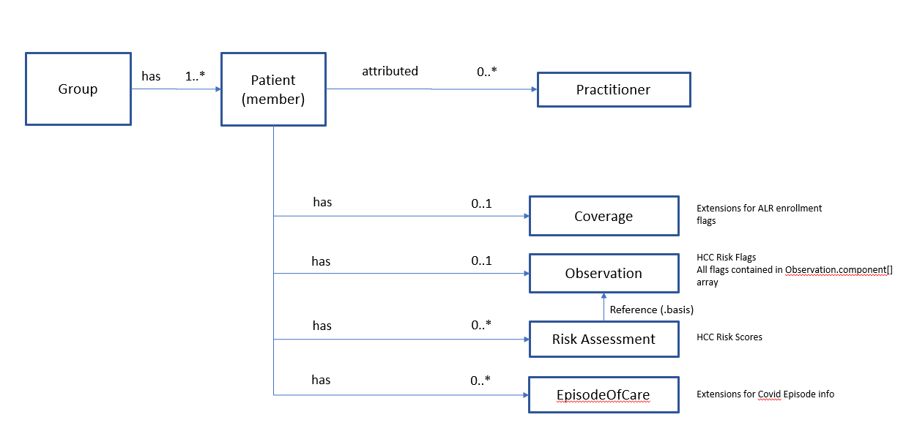

CMS Assignment List Report FHIR IG
0.0.1 - ci-build
CMS Assignment List Report FHIR IG
0.0.1 - ci-build
CMS Assignment List Report FHIR IG - Local Development build (v0.0.1). See the Directory of published versions
This page provides information on the FHIR implementation of the Assignment List Report (ALR), produced by Center for Medicare and Medicaid Services (CMS). The ALR Implementation Guide is based on work done by the DaVinci project. Work on the ALR project is done in collaboration and alignment with the following DaVinci projects:
Da Vinci is an HL7-sponsored project that brings together the U.S. payer ,providers, and technology suppliers (including EHR vendors) to help payers and providers to positively impact clinical, quality, cost, and care management outcomes using FHIR-related technologies. Additional information about Da Vinci, its members, the use cases and the implementation guides being developed and other materials can be found on the Da Vinci Confluence page.
As part of participating in CMS’ alternative payment models, Accountable Care Organizations (ACOs) are assigned beneficiaries. CMS provides ACOs with information on their assigned population and financial performance at the start of the agreement period and routinely during the performance year. The Assignment List Report (ALRs) is the mechanism that provides this information to assist ACOs with healthcare operations and reporting / analytics.
ALR is part of the Beneficiary Claims Data API (BCDA) family of products and subsequently is based on the same technologies, conventions, operations and mechanisms used by BCDA, including the HL7 FHIR specification and the Bulk FHIR specification. Implementers of this ALR specification therefore need to understand basic information about BCDA along with the aforementioned specifications.
This implementation guide uses terminology, notations and design principles that are specific to FHIR. Before reading this implementation guide, it’s important to be familiar with some of the basic principles of FHIR as well as general guidance on how to read FHIR specifications. Readers who are unfamiliar with FHIR are encouraged to read (or at least skim) the following prior to reading the rest of this implementation guide.

This section describes how fields in the current CSV based ALR report are mapped to FHIR elements. The current Assignment List Report is delivered in seven separate CSV files. The ALR data dictionary refers to each file as a “table”, e.g. Table 1-1, Table 1-2…Table 1-7. To facilitate understanding of how the ALR data is mapped to FHIR, the data elements in each table of the ALR report have been grouped and categorized as shown in the following table. Each data element category also shows the associated FHIR resource.
| Table (File) | Description | Data Element Category | FHIR Resource | Notes |
|---|---|---|---|---|
| Table 1-1 | Assignment Data |
|
|
Assigned patients from ALR table 1-1 appear in FHIR as members of the Group resource (e.g. Group.member), which is a reference to the corresponding Patient resource. Note that patients who are no longer assigned (table 1-5) are also members of the group, but have a changeType of "dropped". See Table 1-5 below. |
| Table 1-2 | Service Count by ACO TIN |
|
|
This count appears as an extension in the corresponding patient resource |
| Table 1-3 | Service Count by ACO NPI |
|
|
This count appears as an extension in the corresponding patient resource |
| Table 1-4 | Top N by ACO TIN+NPI |
|
|
This count appears as an extension in the corresponding patient resource |
| Table 1-5 | Turnover Analysis |
|
|
Patients no longer assigned (ALR table 1-5) will appear in FHIR as members of the Group, similar to Table 1-1, but with a change type of "dropped". The changeReason extension provides the reason they are no longer assigned. |
| Table 1-6 | Assignable Beneficiaries |
|
|
Assignable (but not assigned) beneficiaries appear as Patient resources in the payload but are not members of the Group resource. |
| Table 1-7 | COVID Episode Information |
|
|
The Group resource is the focal point of the payload. The member list element in the Group resource contains a reference to each assigned patient, along with various assignment flags that apply to that group member. The Patient resource contains the demographics found in all ALR tables, along with a few extensions to handle things such as service counts (tables 1-2, 1-3 and 1-4) and turnover (table 1-5). The HCC risk flags and scores are handled using a combination of the Observation resource and the RiskAssessment resource. HCC Risk Flags for a given patient are delivered in a single Observation resource, with all flags contained in the Observation.component[] list. This approach was chosen to streamline payload size, given that a single patient typically has approximately 90 risk flags (each with a value of 0, 1 or empty). In contrast, using a single observation resource per flag would significantly increase payload size and processing overhead.
IG © 2021+ . Package hl7.fhir.us.cms-alr#0.0.1 based on FHIR 4.0.1. Generated 2021-09-17
Links: Table of Contents |
QA Report
| Version History |
Search |
 |
Propose a change
|
Propose a change